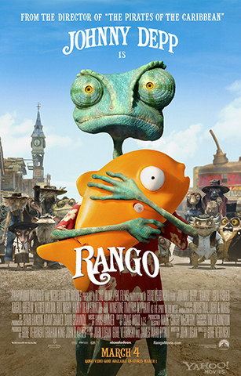

- Director: Gore Verbinski
- Producción: Gore Verbinski
- Guión: John Logan
- Música: Hans Zimmer
- Presupuesto: $135,000,000
- Año: 2011
- Género: Animación, acción
- Duración: 107 minutos
- País: Estados Unidos
- Productora: GK Films
El Oeste norteamericano ha visto pasar toda clase de héroes curtidos y marginales, pero Rango es de una especie nueva: un pequeño camaleón con un gran corazón cuya épica misión consiste en salvar a un pueblo singular, mientras se va convirtiendo en la gran leyenda que antes solo aparentaba ser.
Dirigida por Gore Verbinski, responsable de la épica saga de Piratas del Caribe, y protagonizada por el nominado al Óscar Johnny Depp en el multi-colorido papel homónimo, Rango rinde homenaje a los iconos del western, para a continuación darle la vuelta al género mediante una profundísima revisión, transformándolo en una sorprendente aventura familiar que ofrece tanto grandes dosis de humor irreverente como personajes entrañables y acción trepidante. La película lleva al público a un polvoriento viaje por un mundo imaginativamente diferente, hasta un árido pueblo al borde del desierto habitado por un sorprendentemente extravagante grupo de seres que viven bajo la amenaza de criaturas corruptas, todo ello materializado por un experto grupo de narradores y un elenco con algunos de los actores cinematográficos más populares.
La historia comienza cuando Rango, tras llevar toda la vida como mascota de una familia mirando pasar el mundo desde un terrario de cristal, se pierde en el Desierto de Mojave, en donde llega andando hasta un poblado perdido del Salvaje Oeste llamado Polvo, un lugar tan polvoriento como su nombre indica. Rango espera poder integrarse, pero rápidamente empieza a destacar, incluso entre una población que incluye un alcalde tortuga, una serpiente de cascabel renegada, unos perros de las praderas que roban bancos, lagartos de Gila pistoleros y el primer lagarto hembra que conoce Rango. Cuando Rango se convierte sin pretenderlo en el nuevo sheriff del árido pueblo y en su última esperanza para conseguir hidratarse, se da cuenta de que se ha metido en un buen lío. Es una tradición que los tipos buenos no duren mucho en Polvo, pero Rango está listo para arriesgarse mientras recorre su camino para convertirse en lo único que un camaleón no puede imitar: un héroe de verdad.
